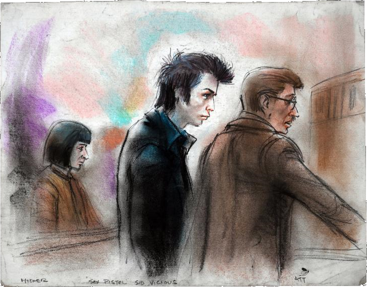

A Look At Mother (1979)
Written by Cass Python, 2018-06-24The Sex Pistol's very own singer, Sid Vicious, is on trial for the murder of his girlfriend, Nancy Spungen, who was killed with a single stab wound to the abdomen; she likely bled to death. The knife that killed her belonged to Vicious, though he would periodically claim that he stabbed her without intent to kill, that he didn't remember the incident at all, or that Nancy fell on the knife.
He would be released on bail on the 1st of February 1979, and attended a party to celebrate his freedom.

Sid's mother (Anne Beverley, can be seen behind Sid in the sketch), who had been acquiring her son's drugs for years, obtained the lethal dose of heroin that left Vicious dead the following morning. He was 22. Since his death, fans as well as law enforcement officials, have theorized Spungen's murder might have been a burglary or drug deal gone wrong.
See The Courtroom Sketches of Ida Libby Dengrove for more information on this photo.